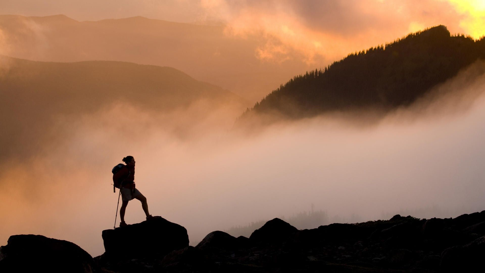

Hobby
Do Outdoor Activities
Hiking / Biking / Camping / Canoeing / Rock Climbing
In today's fast-paced world, it is essential to take some time off from our
busy lives and spend
quality time with our loved ones. Engaging in outdoor
activities is a great way to bond with
family
and friends.
Some activities that I enjoy doing with my family are biking and camping.
Biking is not only a fun activity, but it is also a great way to stay active and
healthy. It
allows
us to explore new places and get some fresh air while we
are at it.
Camping, on the other hand, is an excellent way to disconnect from the stresses
of everyday
life
and
connect with nature. It allows us to appreciate the simple
things in life and teaches us to be
self-sufficient.
Watch online videos
Educational / Craft / Comedy / Travel / Gaming

In today's digital age, watching videos on YouTube has become a popular
pastime for people all
around
the world.
One of the primary reasons why
people love watching videos on YouTube is its accessibility. With
just a few
clicks, you can access an endless supply of content from anywhere in the world.
Usually, I watch online videos on YouTube 4~5 hours a day.
One of my favorite types of
videos is
traveling. I really enjoy the traveling video because I can learn more about the world around
us,
such as cultures,
history, architecture, and so on.